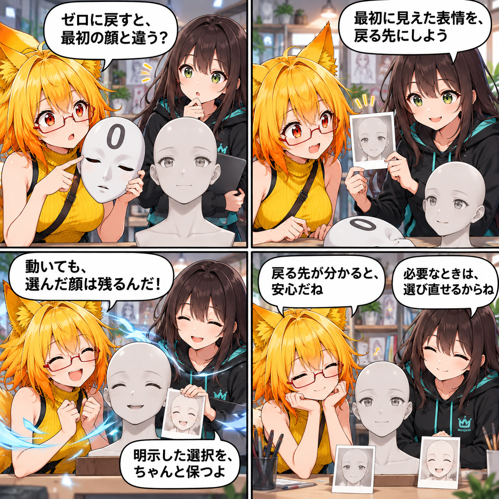

2026.10.07 / Development Log
初期の顔へ、ちゃんと戻る日
表情・体形のリセットを、アバター読込後に最初に表示された状態へ戻し、PresetやSliderで選んだ見た目も保てるようにしました。
記事種別はdevelopment。集計期間は2026-10-06 03:00:00 JST〜2026-10-07 02:59:59 JST。参照ブランチはmain、終了時点のHEADはd8948ff0f6bb4fed6eee52ed2befcc47927f892e（表情・体形リセットとプリセット適用を修正）。対象は7コミットです。未コミット差分は実績に含めていません。

ゼロではなく、最初に見えた状態へ
表情・体形のリセット値を一律の0ではなく、アバターの読込完了後に最初に表示されたBlendShapeの状態として保存し、そこへ戻せるようにしました。全体リセットはパーツの絞り込みに左右されず全BlendShapeを対象にし、カテゴリのリセットは対象カテゴリだけを初期状態へ戻します。
動いても、選んだ見た目を保つ
保存済みの表情・体形PresetとSliderで明示した値は、Runtime AnimationやAV3の次フレーム更新後にも維持するAppearance Overrideとして扱います。一方で、ユーザーがAV3 Controlや対応Expressionを明示操作したときは、そのRuntime操作を優先するため競合するOverrideを解除します。
リセットとPreset適用の経路をそろえる
リセット時にはAV3 Runtimeを初期パラメータ・初期Stateへ戻し、手動ExpressionやVABのExpression状態も整えます。Preset適用、Desktop表示の同期、関連するリセットの動作をテストで確認する変更も同じ期間に含まれます。
4コマの裏話
今回は、ゼロの仮面を外して「最初に見えた顔」を戻る先にする短い物語にしました。選んだ表情が動きのあとも残ることを、風の中でも表情カードを保つ場面で表しています。
まとめ
アバター本来の最初の見た目へ戻る基準を明確にし、ユーザーが選んだ表情・体形Presetは、必要な明示操作があるまで保たれるようにしました。
本日のひとこと
戻る先が分かると、選ぶ楽しさも安心して続けられる。